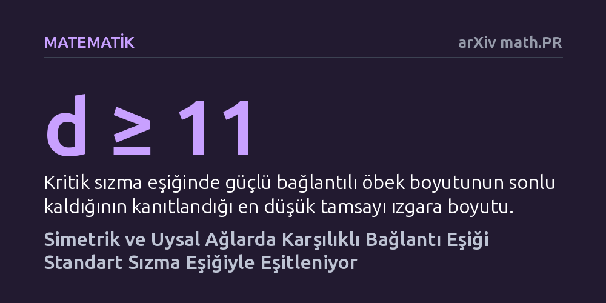

MATEMATIK · arXiv math.PR · 2026-10-23
Araştırmacılar, kenarları iki yönlü ve bağımsız çalışan ağlarda düğümlerin karşılıklı erişilebilir olduğu sonsuz öbeklerin oluşma eşiğini inceledi. Simetrik ve düzgün genişleyen ağlarda bu eşiğin standart sızma eşiğine eşit olduğunu, uysal olmayan ağlarda ise daha yüksek çıktığını kanıtladılar.
Trafik veya iletişim gibi çift yönlü akış gerektiren sistemlerin kritik bağlantı eşiklerinin, ağın geometrisine bağlı olarak standart tek yönlü modellerle aynı kalıp kalmayacağını ortaya koyuyor.

Sızma teorisi, bir ağdaki bağlantıların rastgele açık ya da kapalı olması durumunda sistemin bir ucundan diğerine kesintisiz bir yolun ne zaman oluştuğunu inceler. Klasik modelde bağlantıların açık olma olasılığı belli bir kritik eşiği aştığında, aniden tüm ağı baştan başa saran sonsuz bir bağlantı öbeği meydana gelir. Bu olgu, gözenekli bir kayadan suyun sızmasından elektrik şebekesinin dayanıklılığına ve yangınların yayılmasına kadar birçok fiziksel ve yapısal süreci modellememizi sağlar.
Ne var ki gerçek dünyadaki pek çok ağda sadece bir noktadan diğerine gidebilmek yetmez; iletişimin karşılıklı olması gerekir. Örneğin bir haberleşme ağında bir sunucuya mesaj iletebilseniz bile, sunucudan size geri dönüş yolu açık değilse sağlıklı bir veri alışverişi gerçekleşemez. Bu çalışmada araştırmacılar, her bir kenarın iki zıt yönlü bağımsız hattan oluştuğu çift yönlü ağları inceleyerek temel bir sorunun peşine düşüyor: İki düğümün karşılıklı olarak birbirine ulaşabildiği devasa bir ağ yapısı tam olarak hangi kritik olasılık eşiğinde belirir?
Araştırma fiziksel deneylere, saha gözlemlerine veya bilgisayarlı sayısal simülasyonlara dayanmıyor. Yazarlar bunun yerine olasılık teorisi ve modern çizge kuramının sağladığı biçimsel araçlarla kesin matematiksel teoremler inşa etti. Çalışmada kullanılan yöntem, ağların geometrik özelliklerini ve simetrilerini soyut mantıksal yapılar üzerinden adım adım ispatlamaktan oluşuyor.
Yazarlar analizlerini iki ana çizge sınıfına odakladı: Çeperi hacmine kıyasla ılımlı büyüyen ve Öklid uzayındaki standart ızgaralara benzeyen 'uysal' (amenable) çizgeler ile ağaç yapıları gibi yüzey alanı hacmine oranla katlanarak genişleyen 'uysal olmayan' çizgeler. Buna ek olarak, 11 ve daha yüksek boyutlu tamsayı ızgaralarındaki kritik davranışlar da analitik yöntemlerle mercek altına alındı.
Araştırmanın ulaştığı en dikkat çekici sonuç, simetrik ve uysal ağlarda karşılıklı güçlü bağlantı eşiğinin ($p_\mathrm{sc}$) standart sızma eşiğiyle ($p_c$) birebir aynı olduğunu kanıtlamasıdır. Bu durum, bildiğimiz sokak ızgaraları gibi düzenli genişleyen yapılarda, tek yönlü bir sonsuz yolun belirdiği olasılık seviyesine ulaşıldığı anda, fazladan bir olasılık artışına gerek kalmaksızın iki yönlü karşılıklı erişilebilir öbeklerin de kendiliğinden ortaya çıktığını gösterir.
Buna karşın, uysal olmayan ağlarda tablo tamamen değişmektedir. Düğümlerin hızla birbirinden koptuğu hiperbolik ya da ağaç benzeri geometrilerde, güçlü karşılıklı bağlantının kurulabilmesi için gereken kritik olasılık değeri, standart tek yönlü eşiğin kesin olarak üzerinde kalmaktadır ($p_\mathrm{sc} > p_c$). Yani bu tür hızlı genişleyen ağlarda karşılıklı erişim sağlamak, standart bir yol bulmaktan çok daha zorlu bir eşik gerektirir.
Yazarların 11 veya daha yüksek boyutlu kafesler üzerindeki analizi ise bir diğer kritik gerçeği ortaya koydu. Tam kritik eşik seviyesinde ($p = p_\mathrm{sc}$), rastgele seçilen bir düğümün ait olduğu güçlü bağlı öbeğin beklenen boyutu sonlu kalmaktadır. Bu bulgu, kritik eşiğin tam sınırında kontrolsüz bir öbek patlaması yaşanmadığını ve sonsuz öbeklerin ancak eşik aşıldıktan sonra varlık kazandığını gösterir.
Bu matematiksel sonuçlar, yönlendirilmiş ağlarda çift yönlü dayanıklılık ve karşılıklı erişilebilirliğin doğrudan ağın uzaysal genişleme biçimiyle şekillendiğini kanıtlamaktadır. Standart geometrilerde iki yönlü iletişim kurmak ek bir bağlantı yoğunluğu maliyeti getirmezken, üstel genişleyen karmaşık topolojilerde karşılıklı iletişimi ayakta tutmak için çok daha yoğun bağlantı altyapısına ihtiyaç duyulduğu netleşmektedir.
Çalışma saf matematik ve istatistiksel fizik kuramına odaklanmış olsa da sunduğu kesin sınırlar; dağıtık bilgisayar ağlarının yönlendirme protokollerinden otonom araçların telsiz iletişim ağlarına kadar birçok alanda gelecekteki pratik modeller için sağlam bir teorik referans çerçevesi oluşturmaktadır.